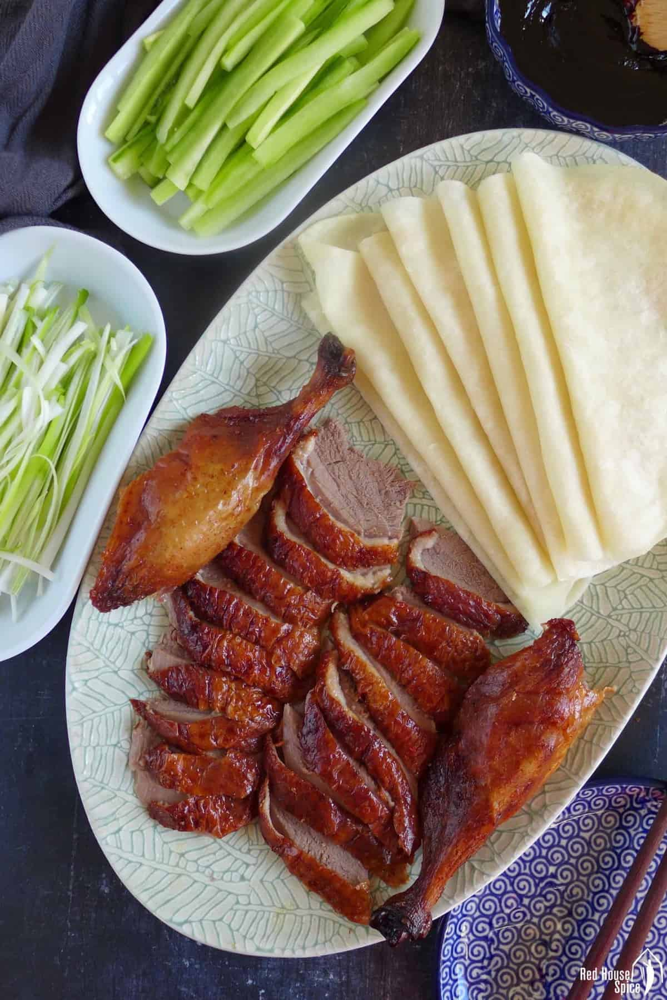

Home
Peking Duck

Description
Peking duck is a famous Chinese dish that dates back at least 400 years. The duck is characterized by its crispy skin and tender meat. It is traditionally made with a specific kind of duck and takes days to prepare, but this version comes together in just under four hours.
Ingredients
- 1 (4 pound) whole duck, dressed
- ½ teaspoon ground cinnamon
- ½ teaspoon ground ginger
- ¼ teaspoon ground nutmeg
- ¼ teaspoon ground white pepper
- ⅛ teaspoon ground cloves
- 3 tablespoons soy sauce, divided
- 1 tablespoon honey
- 5 green onions, divided
- ½ cup plum jam
- ¼ cup finely chopped chutney
- 1 ½ teaspoons sugar
- 1 ½ teaspoons distilled white vinegar
- 1 orange, sliced in rounds
- 1 tablespoon chopped fresh parsley, for garnish
Steps
- Gather all ingredients.
- Rinse duck inside and out; pat dry. Cut off tail and discard.
- Mix cinnamon, ginger, nutmeg, white pepper, and cloves together in a small bowl. Sprinkle 1 teaspoon of spice mix into cavity of duck.
- Stir 1 tablespoon soy sauce into remaining spice mix and rub evenly over entire outside of duck.
- Cut 1 green onion in half and tuck it inside cavity.
- Cover and refrigerate duck for at least 2 hours or up to overnight.
- Place duck breast-side up on a rack set in a wok or pot. Steam for 1 hour, adding more water as it evaporates.
- Lift duck with two large spoons to drain juices and green onion.
- Preheat the oven to 375 degrees F (190 degrees C). Place duck breast-side up in a roasting pan and prick skin all over with a fork.
- Roast duck in the preheated oven for 30 minutes.
- Mix together remaining 2 tablespoons soy sauce and honey in a small bowl. Brush honey mixture onto duck.
- Increase the oven temperature to 500 degrees F (260 degrees C). Roast until skin is richly browned, about 5 minutes. Do not allow skin to char.
- Mix plum jam, chutney, sugar, and vinegar in a small serving bowl. Chop remaining green onions and place them into a separate bowl.
- Place whole duck onto a serving platter and garnish with orange slices and fresh parsley. Serve with plum sauce and chopped green onions.